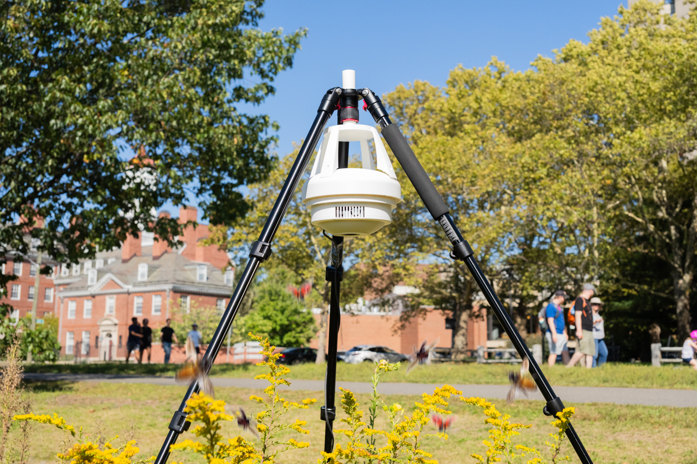
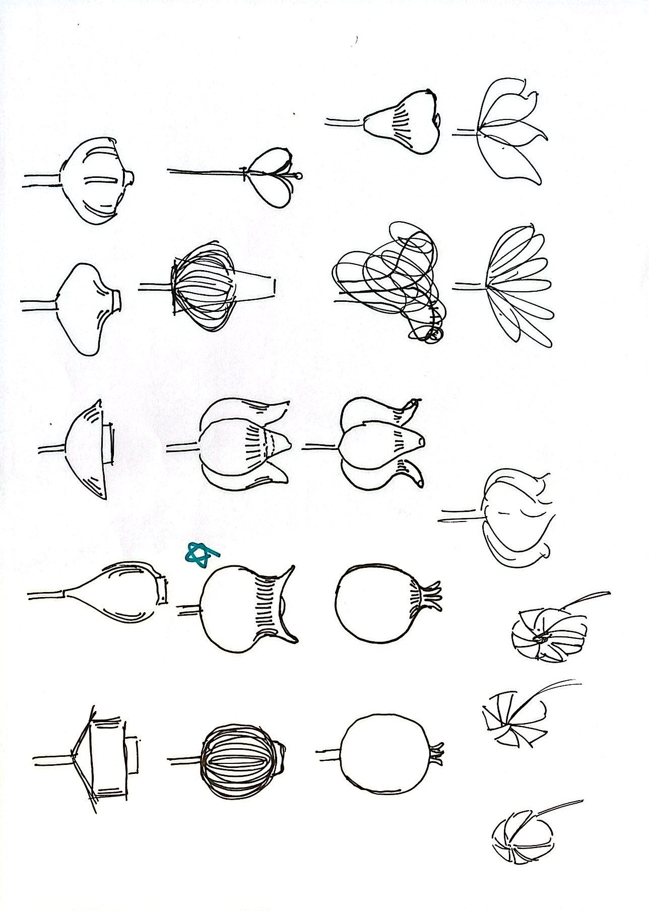
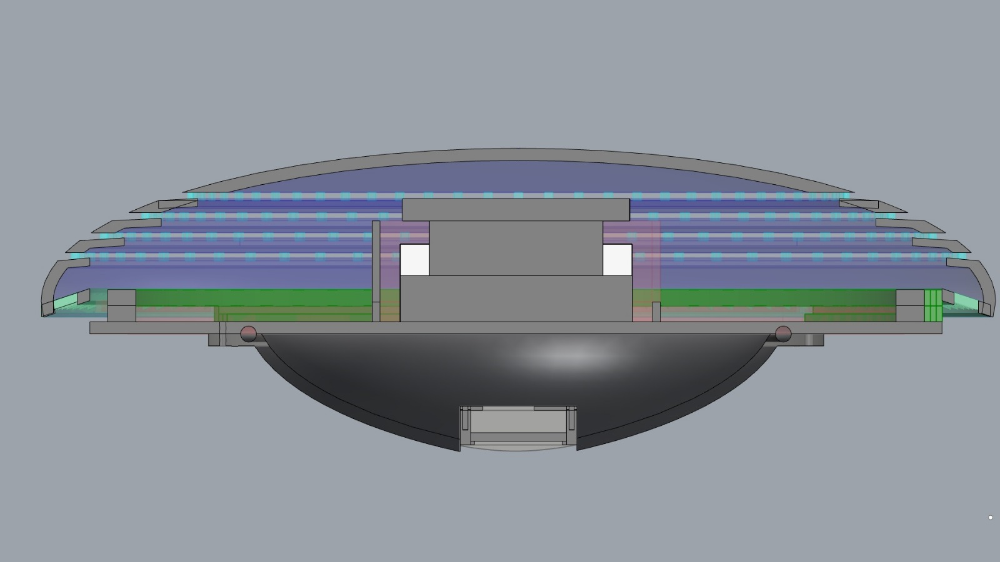
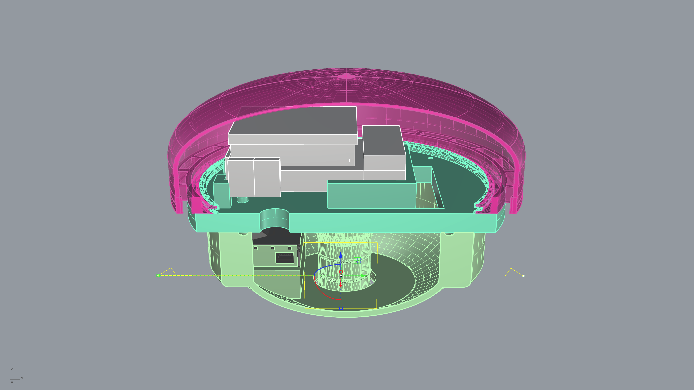
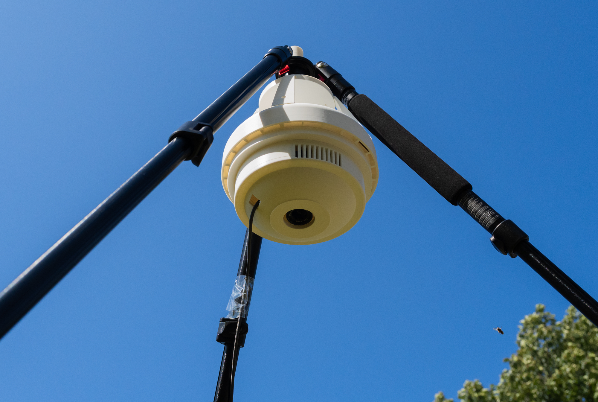

Around 65% of insect species could go extinct over the next hundred years — yet most monitoring tools detect only a fraction of species. Sensing Garden combines computer vision and edge AI in a weatherproof, community-deployable device to track insect biodiversity at scale.

The loss of biodiversity is a global crisis with profound ecological and economic consequences. Among the numerous threats, the rapid decline in insect populations is particularly alarming — insects are essential to pollination, nutrient cycling, and as a food source for other species.
With a computer vision model capable of identifying insect species at a scale more than 60 times greater than existing models, an open image dataset, and recent improvements to the YOLO architecture, Sensing Garden offers a fast, open-access method for visual AI monitoring of insect species across climatic regions.
Designing a device for real-world ecological monitoring meant reconciling competing constraints — the sensor hardware needed for accurate detection, the physical conditions of outdoor deployment, and the practical realities of community use without technical expertise.
Weatherproof across humidity, rain, and temperature variance without compromising sensor performance.
Allow air to pass through the enclosure while preventing insects from entering and keeping water out.
Enable community members around the world to deploy the device independently, without technical support.

Two design iterations optimised 3D printing time and ease of assembly, while integrating expanded hardware capabilities with a new camera module. The final device is tripod-compatible for flexible, optimal placement in the field.


The Sensing Garden has been deployed in four cities, bringing real-time insect biodiversity monitoring to urban environments. In Amsterdam, student workshops gave young researchers the tools to run their own experiments and investigations into urban biodiversity — making ecological science accessible and participatory.
